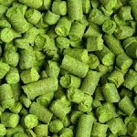

Insumos
Lúpulos
Cascade (ARG)
Alfa ácidos: 4.5-7% Uso: Sabor, aroma, amargar. Estilo: Pale ale, IPA, porter, barley wine. Similares: Amarillo, centennial. Aroma: Cítrico, floral.
Nugget (ARG)
Alfa ácidos: 11-14.5% Uso: Amargar. Estilo: Pale ale, IPA, APA , strong ale. Similares: Columbus, magnum, halletauer. Aroma: herbal y maderas.
Saaz (REP.CHECA)
Alfa ácidos: 3-5%. Uso: Aroma. Estilo: Lager, american ale, pilsner. Similares: tettnang, sterling. Aroma: Herbal
English golding (UK)
Alfa ácidos: 4-6%. Uso: Sabor, aroma y amargar. Estilo: Pale ale, ESB, cervezas tipo inglesas. Similares: Golding U.S, golding whitbread, progress. Aroma: Dulce, herbal.
Fuggle (UK)
-Alfa ácidos: 4-5.5%. -Uso: Sabor, aroma y amargar. -Estilo: Cualquier tipo de cerveza estilo inglés, ESB, lager. -Similares: Willamette, styrian, golding, tettnanger. -Aroma: Terroso y frutal.
Hallertauer Tradition (ALE)
-Alfa ácidos: 3.5%-5.5%. -Uso: Aroma. -Estilo: Cervezas suavemente saborizadas. -Similares: Crystal, liberty. -Aroma: Ligeramente picante, floral, frutal.
Centennial (USA)
-Alfa ácidos: 8%-11.5%. -Uso: Sabor, aroma, amargar. -Estilo: Todos los estilos de ale y se ha usado en cervezas de trigo. -Similares: Cascade, chinook, columbus. -Aroma: Citrico, floral.
Amarillo (USA)
Alfa ácidos: 8-9%. Uso: Sabor, aroma. Estilo: IPA, ALE, bitter, wheat beer. Similares: Cascade, Centennial. Aroma: Citrico, floral.
Lemondrop (USA)
Alfa ácidos: 4.6-5%. Uso: Aroma. Estilo: IPA, saison, hibridos. Similares: Cascade, mandarina, bavaria, centennial. Aroma: Limon, menta, te verde, melón.
Blend Americano (USA)
Alfa ácidos: 11.14%. Uso: Sabor, aroma. Estilo: Cervezas americanas. Similares: ----. Aroma: Citrico, floral, herbal.
Magnum (ALE)
Alfa ácidos: 13% a 15%. Uso: Amargar. Estilo: Todo tipo de cerveza como lager, pilsner, stout. Similares: Columbus, nugget. Aroma: Afrutado, especiado.